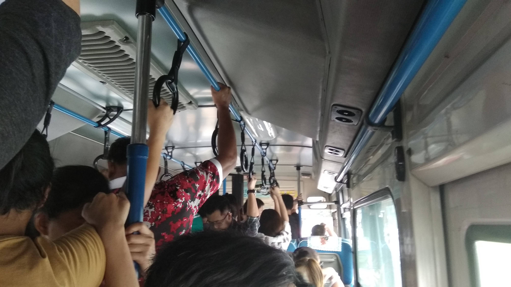

Robinsonバスを利用して行動範囲を広げよう！
2018/07/20 最終更新:2018/07/27
前回の続き。
Robinson Galleria CEBUより様々な方面へシャトルバスが出ております。これを上手く利用することでセブ生活をより便利にすることが出来るでしょう。
ルート一覧GoogleMap
攻略済 : ガレリア〜フエンテ間
今後時刻の変更の可能性も様々存在するのでFacebook公式を確認することをオススメします。
ガレリア〜フエンテ間
当該のバス。全面や側面に行き先名称が表示されているので識別は容易。
当該ルート
ルート : ガレリア→サイバーゲート→フエンテ→ガレリア
値段 : 無料
無料で移動できることもあってかなりの利用者。席に座りたい場合はお早めにお並びを.......
時刻表
ガレリア→フエンテ
AM 9:00 9:30 10:00 10:30
PM 12:00 12:30 1:00 1:30 2:00 2:20 3:30 4:00 4:30 5:00 5:30 6:00 6:30 7:00 8:30 9:15
フエンテ→ガレリア
AM 9:30 10:00 10:30 11:00 11:30
PM 12:00 12:30 1:00 1:30 2:45 3:15 3:45 4:30 5:00 5:30 6:00 6:30 7:00 7:30 8:45
随時更新中
各種マップや写真などを随時追加していきますので今一度お待ちください！
更新履歴
2018/07/20 初回公開
2018/07/27 更新、ガレリア→フエンテ間のGoogle mapや画像追加